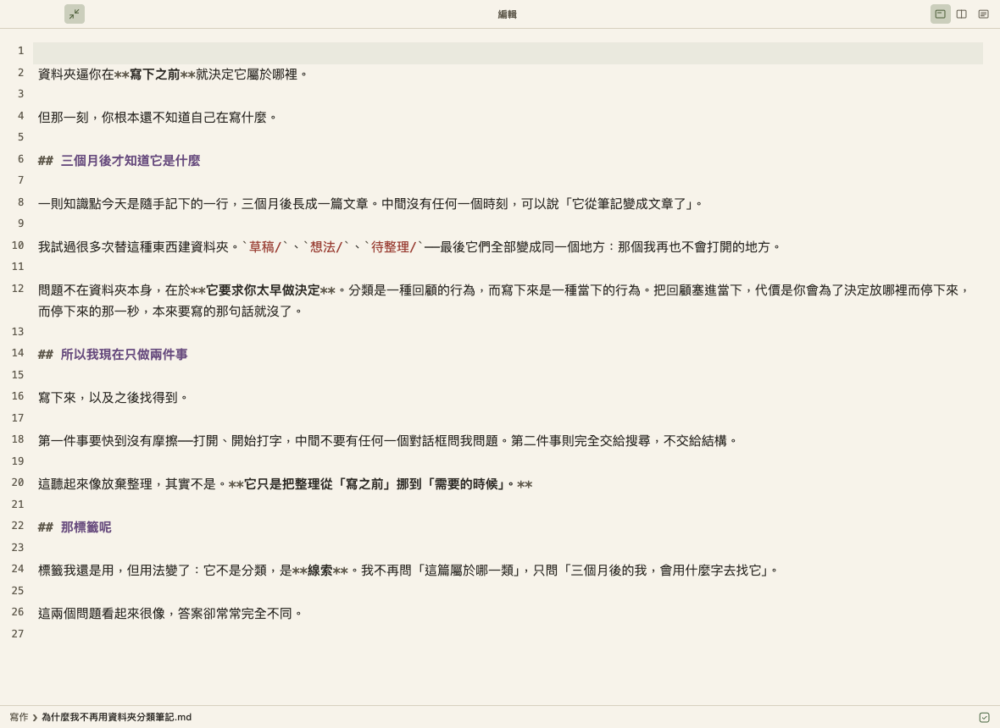
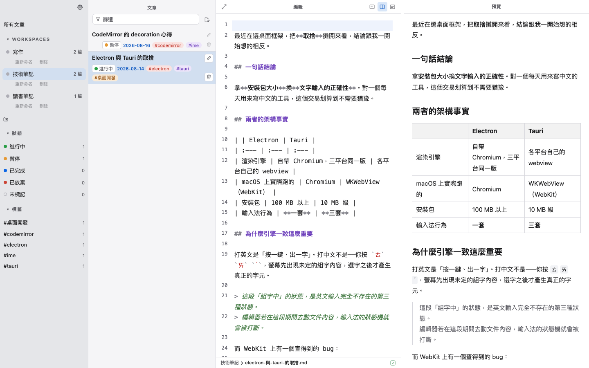
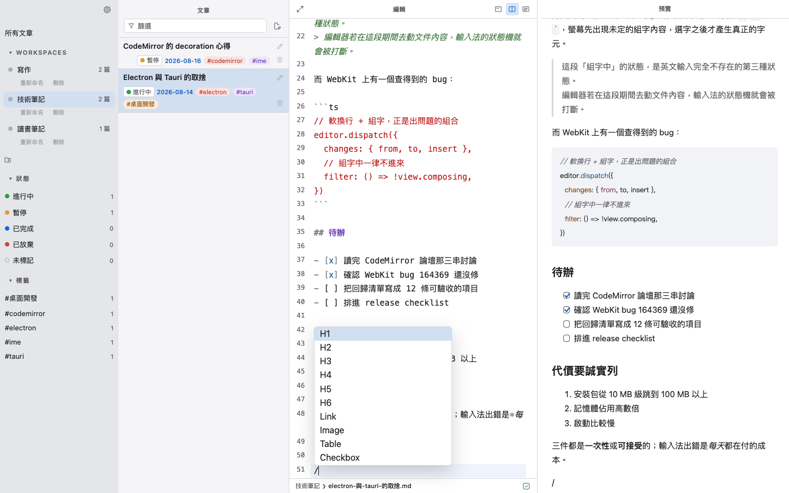
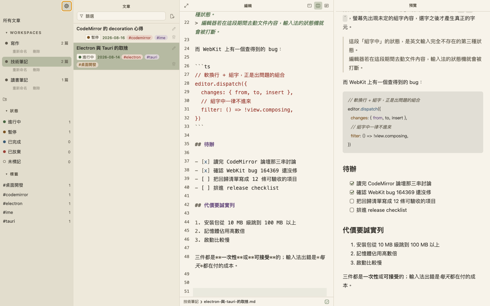

macOS · works offline · no account
Nothing interrupts you
while you write
ZenMD is a local desktop writing environment. Every decision behind it comes down to one question — will this interrupt the person writing?

Focus is not a tidier interface. It is the absence of interruption.
Every editor calls itself distraction-free, and usually means there is less on the screen. ZenMD is after something else: in the few seconds while you are typing, what is able to interrupt? Which is why it keeps a long list of things it refuses to do — each one a habit other editors have that no writer ever asked for.
| What you are doing | What it will not do |
|---|---|
| Pressing Tab to indent a line | It will not send your cursor off to some button. Tab only indents |
| Typing | It will not pop up to finish your sentence. There is no autocomplete |
| Writing the body | It will not put a line of YAML in front of you. Metadata is filled in once, then gone |
| Calling up a snippet and changing your mind | It will not leave behind anything for you to clean up |
| Pasting a screenshot | It will not ask where to put it or what to call it. The file lands, the cursor never moves |
| Looking for something to write about | It will not hand you a graph to wander around in for an hour instead |
Everything is there when you want it
Restrained does not mean bare. Zen mode is a switch, not the only shape.
Write on one side, see the finished thing on the other
Markdown source on the left, rendered on the right, moving as you type. Three arrangements, one key each, and it remembers which one you left it in.

Type / and the shape you want falls in
Headings, links, images, tables, task items. The cursor lands on the first thing to fill in, so you just type. The slash only counts at the start of a line or after a space, so typing https:// never sets it off.

Four themes — follow the system, or pick one
Light, dark, forest, zen. Down to every colour in the snippet menu.

The app is free. Only the hosted parts are paid.
Everything you do locally is free and unmetered — your files are on your own disk, and there is no reason for me to charge you for that. What costs money is the part that needs a server running.
- ✦Everything the editor does locally
- ✦As many pieces and workspaces as you like
- ✦Four themes, snippet menu, paste an image
- ✦Your files stay yours — leave any time
or $50 a year — ten months' worth
- ✦Everything in Free
- ✦Sync across machines
- ✦Publish a piece to a link anyone can open
- ✦Version history
"The paragraph I deleted three weeks ago — I can get it back."
Sync and publishing are still being built.
You will not be charged a cent before they ship.